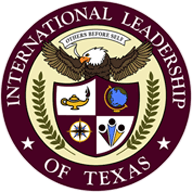

ILTexas优势
2015-05-09

英语，中文和西班牙语教学
在美国乃至世界上，德克萨斯州拥有强大的经济实力。墨西哥，加拿大和中国是我们的前三个主要的出口国家，中国已跃居世界第二大经济体。为了保持德克萨斯州和美国的领先地位，我们为学生提供一个独特的教育机会，以确认他们能讲流行的英语，西班牙语和汉语。
升学优势Top 10% rule
德州国际领袖学校毕业班年级排名前10%的学生可以被德州所有公立学校自动录取，不需要托福成绩和SAT成绩。
在德州国际领袖学校就读的中国学生，只要在校学习，必要时申请包括UT Austin在内的德州公立大学是享受“美国公民待遇”：即自动享受和州内学生一样的学费（州内学费约为国际学生学费的1/4-1/3，2014年德州大学奥斯汀分校州内学费为$9,816，国际学生学费$34,860）。